Refer to Figure 13.24 in the text book for the inverter circuit used for analyzing the propagation delay.
(a)
The simplified expression for the capacitance  is,
is,
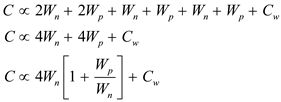
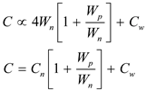
Thus, the expression for the capacitance when 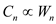 is,
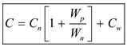.
Refer to Figure 13.24 in the text book for the inverter circuit used for analyzing the propagation delay.
(a)
The simplified expression for the capacitance is,
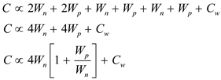
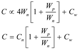
Thus, the expression for the capacitance when 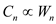 is,
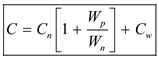.
(b)
Determine the value of  when 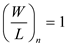.
when 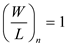.
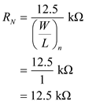
Determine the value of  when .
when .
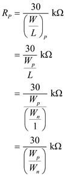
Determine the high to low propagation delay,  .
.
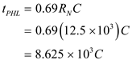
Determine the low to high propagation delay, 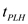.
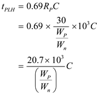
Thus, the expressions for propagation delays are,
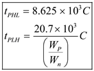.
When 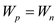 the propagation delay 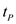 is,
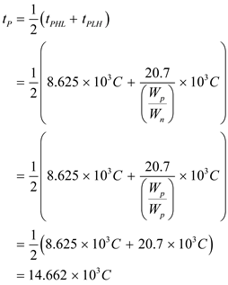
Substitute 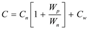 in the expression for  .
.
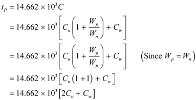
Thus, the expression for  is,
is,
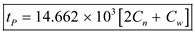.
(d)
The ratio, 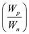 is selected such that 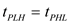.
Equate the two delays.
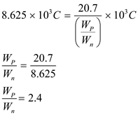
Determine the value of  by substituting 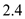 for 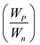.
by substituting 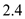 for 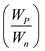.
Substitute 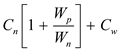 for 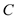.
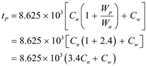
Thus, the expression for propagation delay is,
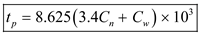.
(e)
(i)
Determine  when 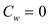 for
when 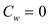 for  determined in part (c).
determined in part (c).
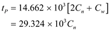
Thus, the propagation delay  is 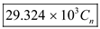.
is 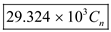.
 when for
when for  determined in part (d).
determined in part (d). 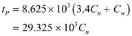
Thus, the propagation delay  is 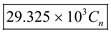.
is 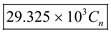.
(e)
(ii)
Determine  when 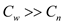 for
when 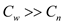 for  determined in part (c).
determined in part (c).
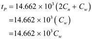
Thus, the propagation delay  is 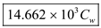.
is 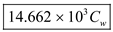.
Determine  when for
when for  determined in part (d).
determined in part (d).

Thus, the propagation delay  is 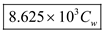.
is 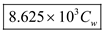.